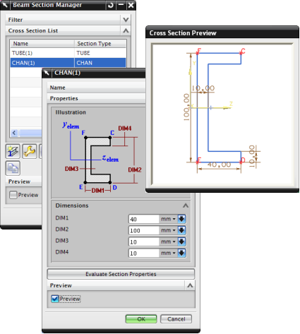

创建梁横截面
使用1D 单元截面  命令，来为1D 杆单元或1D 梁单元网格创建横截面，在梁网格的物理属性表中指派横截面，要创建横截面，您可以：
命令，来为1D 杆单元或1D 梁单元网格创建横截面，在梁网格的物理属性表中指派横截面，要创建横截面，您可以：
-
从特定于求解器的列表中选择一个截面，然后横截面的尺寸
-
从面或实体创建横截面
-
从草图几何体创建横截面
通过编辑网格收集器的物理属性表来为网格指派横截面。
通过编辑网格的网格相关数据来调整横截面方向和偏置。

由于截面属性是关联的，软件将在衍生它们的数据发生变更时进行更新。